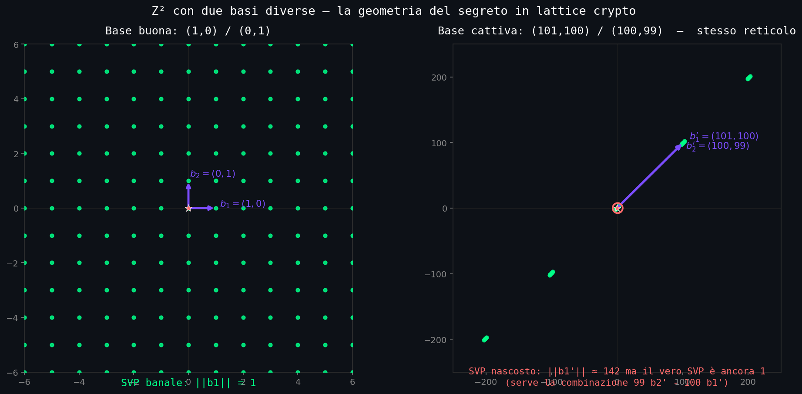
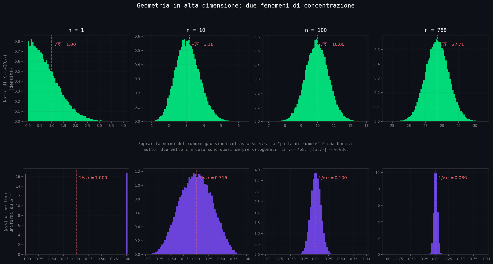
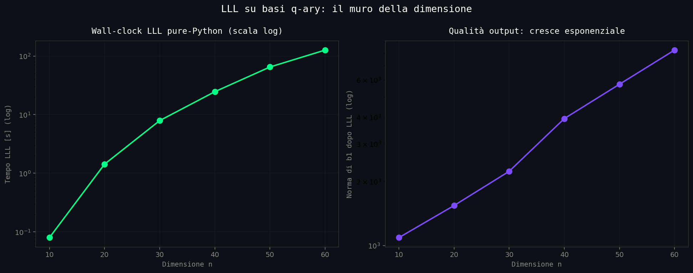
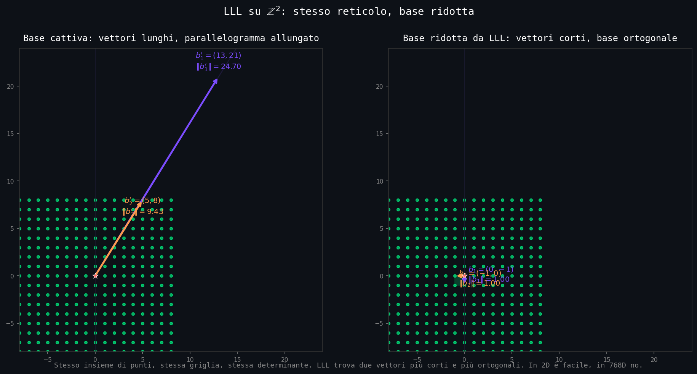
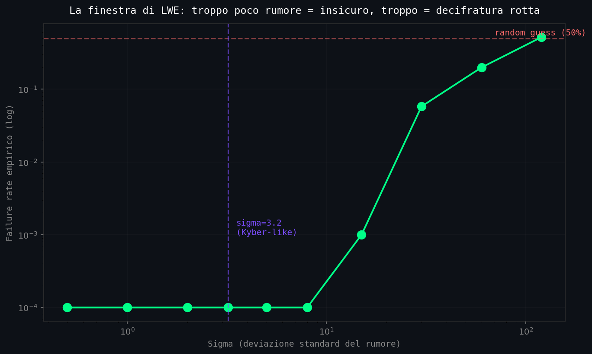
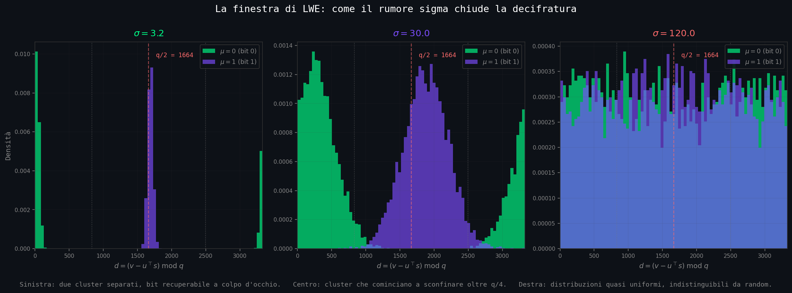

// Il Cifrario Che Nessuno Ha Visto Arrivare
Sezione 01. La iena e il corso di aggiornamentoLa iena ha un posto fisso. Quello tipo da film di Zalone, pubblica amministrazione. Come ogni posto fisso che si rispetti, una volta all'anno la mandano a fare il corso di aggiornamento online. Cybersecurity, GDPR, sicurezza informatica, codice etico. Lezioni registrate, quesiti a risposta multipla, attestato in PDF da stampare e portare al protocollo.
Stasera sta sul divano con l'iPad e le cuffie. Io accanto, col laptop sulle ginocchia, a cazzeggiare su Twitter cercando di non guardare il grafico del Bitcoin. Ogni tanto si toglie una cuffia e mi tira una domanda dal corso. Di solito sono cose viste e riviste: differenza fra simmetrico e asimmetrico, lunghezza minima delle chiavi RSA per la PA, perché MD5 e SHA-1 non si usano più. Roba dei manuali NIST tradotta negli anni Duemila. Le rispondo distratto, "tranello, vai al quesito dopo".
Stasera però in una delle multiple choice spunta una sigla che non avevo mai sentito menzionare in un corso italiano:
«Quale dei seguenti NON è uno standard crittografico approvato dal NIST?»
A) AES-256
B) SHA-3
C) ML-KEM-768
D) DES
"Andre, che cos'è ML-KEM-768? Nel materiale non c'è".
Le rispondo al volo, mezzo distratto: "Tranello del questionario, roba vecchia rinominata. La risposta è D, DES è deprecato dal 2005. Vai avanti".
Non le basta. Mette giù l'iPad, apre Safari, digita "ML-KEM-768 cos'è" in italiano. Non trova un cazzo. Comunicati NIST tradotti male, due articoli Medium di consulenti che vendono corsi, una pagina di Wikipedia che rimanda all'inglese, un thread su Reddit in cui qualcuno linka un paper di 47 pagine. Mi guarda. "Andre, e poi sarei io quella che non si aggiorna".
Stasera rimedio io. Apro un terminale e le faccio vedere la cosa concreta. Lancio openssl s_client verso un server qualsiasi, e fra le righe di output salta fuori questa:
"Vedi questa? È quello che protegge il login al tuo portale, l'app di Signal aperta nell'altra mano, il pagamento PagoPA di stamattina. La prima metà, X25519, è la crittografia su curve ellittiche che esiste dal 1985. La seconda metà, MLKEM768, è la sigla che il tuo corso ti chiede di riconoscere ma non ti spiega: standardizzata dal NIST il 13 agosto 2024 con il nome FIPS 203".
È il primo algoritmo a chiave pubblica con standard federale americano che non vive nei numeri primi. Niente fattorizzazione, niente logaritmo discreto, niente curve ellittiche. Vive in un reticolo a 768 dimensioni. È il cambio crittografico più profondo dal 1977, l'anno in cui Rivest, Shamir e Adleman hanno pubblicato RSA.
Quarant'anni di aritmetica modulare, finiti.
È già sotto al telefono che la iena ha in mano, ai DM di iMessage e Signal, ai login SSH dei server della sua amministrazione. Chrome lo serve di default da agosto 2023, OpenSSH 9.9 da settembre 2024. Il browser con cui stai leggendo questa pagina lo sta probabilmente usando per parlarci. Solo che in italiano, come ha scoperto la iena due minuti fa, davvero non lo racconta nessuno. Stanotte tiro fuori cosa c'è dentro quella seconda metà del nome.
// Il Vecchio Mondo: Aritmetica
Sezione 02. Quarantasette anni di numeri primiPer capire perché il salto è grosso, bisogna ricordarsi su cosa stava in piedi tutto fino a ieri. Ogni cifrario a chiave pubblica usato su Internet negli ultimi quarantasette anni è uno dei tre seguenti, tutti basati su problemi di aritmetica:
| Nome | Anno | Problema sottostante | Oggetti matematici |
|---|---|---|---|
| Diffie-Hellman | 1976 | Logaritmo discreto in \(\mathbb{Z}_p^*\) | Interi modulo un primo |
| RSA | 1977 | Fattorizzazione di interi | Prodotto di due primi grandi |
| ECC | 1985 | Logaritmo discreto su curva ellittica | Punti su una curva su \(\mathbb{F}_p\) |
Tutti e tre sono problemi aritmetici. Dato \(N = pq\) con \(p, q\) primi di 1024 bit, fattorizzare \(N\) richiede oggi tempo subesponenziale tramite il General Number Field Sieve, complessità \(\exp\!\big(c \cdot (\log N)^{1/3} (\log\log N)^{2/3}\big)\). Per \(N\) di 2048 bit si stimano circa \(2^{112}\) operazioni. Su un cluster classico, qualche miliardo di anni. La banca dorme tranquilla.
Dato \(g^x \bmod p\) con \(p\) primo di 2048 bit, ricavare \(x\) ha la stessa complessità del precedente. Su curva ellittica il problema è ancora più secco: dato \(P, Q = xP\) su una curva tipo Curve25519, ricavare \(x\) richiede \(O(\sqrt{n})\) operazioni con l'algoritmo di Pollard rho, dove \(n\) è l'ordine del gruppo. Per Curve25519, \(n \approx 2^{252}\), quindi serve circa \(2^{126}\) operazioni. La stessa banca dorme più tranquilla con chiavi di 32 byte invece che 256.
Aritmetica vuol dire una cosa precisa. Vuol dire che il segreto vive in un anello o in un gruppo di interi (o di punti di una curva). Le operazioni sono somma e prodotto modulo qualcosa. La sicurezza dipende dal fatto che invertire una certa funzione su quel gruppo (estrarre log, fattorizzare, decomporre un punto) sia computazionalmente duro. Questo modello è durato 47 anni esatti. Il 13 agosto 2024 il NIST ha pubblicato lo standard che dice: non basta più.
// Shor Rompe Tutto
Sezione 03. 1994, sette pagine, un disastroNel 1994 Peter Shor pubblica un articolo da sette pagine, Algorithms for Quantum Computation. L'articolo descrive un algoritmo che, dato un computer quantistico abbastanza grande, fattorizza interi di \(n\) bit in tempo \(O(n^3)\). Lo stesso algoritmo, con piccole modifiche, calcola il logaritmo discreto in qualsiasi gruppo finito abeliano. Quindi: RSA, Diffie-Hellman, ECC. Tutti rotti, simultaneamente, da un singolo algoritmo.
Il trucco è questo: Shor non attacca RSA direttamente, attacca il problema del periodo. Trova in tempo polinomiale il periodo della funzione \(f(x) = a^x \bmod N\) (per RSA) o \(f(x) = g^x\) in un gruppo (per Diffie-Hellman, ECC). Da quel periodo si ricavano direttamente i fattori di \(N\) o l'esponente segreto. È per quello che fattorizzazione e logaritmo discreto cadono entrambi: sotto, sono lo stesso problema computazionale. E sotto un computer quantistico, è il problema su cui la quantum Fourier transform brilla.
La cosa importante non è quando arriva il computer quantistico grande abbastanza. La cosa importante è che esiste l'algoritmo. Significa che la sicurezza della crittografia classica non sta in un teorema, sta in un limite ingegneristico temporaneo. Il traffico cifrato oggi, registrato da chi ne ha interesse, sarà decifrabile retroattivamente quando la macchina arriva. Si chiama harvest now, decrypt later. Detto in italiano: il traffico che oggi sembra sicuro potrebbe essere solo in freezer.
Quanto manca? Le stime continuano a stringersi. Nel 2023 servivano milioni di qubit fisici, finestra credibile 2030-2040. Nel marzo 2026 Google Quantum AI pubblica un paper che taglia i requisiti di un fattore 20 per attaccare ECC su 256 bit: bastano circa 1.200 qubit logici, sotto 500.000 fisici, tempo di esecuzione stimato sotto i 9 minuti. La finestra si sposta a "potenzialmente fine decennio nel migliore caso ingegneristico".
Il 24 aprile 2026 arriva anche il primo brick concreto: Giancarlo Lelli vince il Q-Day Prize di Project Eleven (1 BTC) recuperando una chiave privata da una pubblica su curva ellittica a 15 bit con hardware quantistico cloud. Quindici bit non sono 256, si rompono classicamente con un Raspberry Pi in millisecondi. Il senso del premio è un altro: prima dimostrazione pubblica e verificata che il principio funziona sul ferro vero, non solo in simulazione.
Niente di tutto questo rompe Ethereum, Bitcoin o RSA oggi. Ma il NIST nel 2016 aveva già lanciato il bando per la crittografia post-quantum proprio per questo: il dato cifrato oggi deve sopravvivere ai vent'anni a venire, e le stime continuano a stringersi.
Polinomiale invece di subesponenziale, su un computer quantistico abbastanza grande.
L'aritmetica modulare è rotta. Servono problemi che Shor non sa attaccare. Il candidato più serio, e quello che ha vinto, viene dalla geometria dei numeri.
// Il Salto: Dai Numeri Alla Geometria
Sezione 04. Cos'è un reticoloUn reticolo in \(\mathbb{R}^n\) è l'insieme di tutte le combinazioni a coefficienti interi di una base. Date \(n\) colonne linearmente indipendenti \(\mathbf{b}_1, \ldots, \mathbf{b}_n \in \mathbb{R}^n\), il reticolo che generano è:
Combinazioni intere, non reali. Cambia tutto.
Spazio vettoriale: combinazioni a coefficienti reali, ottieni una superficie continua (un piano, un iperpiano). Reticolo: combinazioni a coefficienti interi, ottieni un insieme discreto di punti che riempiono lo spazio come una griglia (in generale storta). Sembra una differenza minuta. Non lo è. La geometria del discreto in alta dimensione è un altro pianeta rispetto a quella del continuo.
Lo stesso reticolo si può descrivere con basi diverse. Prendi \(\mathbf{b}_1 = (1, 0)\) e \(\mathbf{b}_2 = (0, 1)\): il reticolo è \(\mathbb{Z}^2\), la griglia di tutti i punti a coordinate intere. Ora prendi \(\mathbf{b}_1' = (101, 100)\) e \(\mathbf{b}_2' = (100, 99)\). Il reticolo generato è esattamente lo stesso: ogni punto a coordinate intere si può scrivere come combinazione a coefficienti interi delle due nuove basi (l'esercizio è banale dato \(\det \mathbf{B}' = -1\)). Ma le due basi guardate sono molto diverse: la prima è corta e ortogonale, la seconda è lunga e quasi parallela.
La distinzione che regge tutta la crittografia post-quantum. Lo stesso reticolo ammette infinite basi. Avere una base buona (corta, ortogonale) significa poter risolvere problemi geometrici facilmente. Avere una base cattiva (lunga, quasi-collineare) significa non vedere niente. La chiave segreta in lattice-crypto è: la base buona. La chiave pubblica è: una base cattiva dello stesso reticolo. Chi conosce la base buona decifra. Chi vede solo la base cattiva, no.
La storia tecnica che porta a Kyber è densa di nomi e di tentativi falliti. Vale qualche riga per ricordarli, perché il lattice-paradigma non è arrivato per ispirazione:
- LLL (1982). Lenstra, Lenstra, Lovász. Primo algoritmo polinomiale per ridurre basi di reticolo. Nasce per fattorizzare polinomi, finisce per attaccare crittografia.
- NTRU (1996). Hoffstein, Pipher, Silverman. Schema lattice che sembrava borderline e sopravvive trent'anni. Tuttora in produzione.
- Ajtai (1996). Worst-case to average-case reduction: basta che SVP sia hard nel caso peggiore perché reticoli random lo siano in media. Fondamento matematico di tutta la PQC.
- GGH (1997). Primo schema lattice "completo" (Goldreich, Goldwasser, Halevi). Distrutto da Phong Nguyen due anni dopo.
- LWE (2005). Oded Regev introduce Learning With Errors e ne riduce la durezza a SVP. Premio Gödel 2018. È il problema su cui sta Kyber.
- NIST PQC (2017-2024). Otto anni di competizione pubblica, due finalisti rotti durante il processo (Rainbow, SIKE). Vince la famiglia dei reticoli.
La lezione operativa di questa lista è che il vincitore (Module-LWE) non è arrivato per eleganza, è arrivato perché tutto il resto è stato testato in pubblico. In \(\mathbb{R}^n\) i due problemi geometrici fondamentali sui reticoli sono:
Shortest Vector Problem e Closest Vector Problem.
SVP: trova il vettore più corto, non nullo, del reticolo. CVP: dato un punto qualsiasi \(\mathbf{t}\) (non necessariamente sul reticolo), trova il punto del reticolo più vicino a \(\mathbf{t}\). Tutto qua, formalmente.
Detto in modo viscerale: SVP è cercare un ago geometrico dentro un'esplosione combinatoria. Il reticolo è discreto ma illimitato, lo spazio dei candidati cresce esponenziale con la dimensione, e in alta dimensione la nozione stessa di “corto” smette di comportarsi come ti aspetti (lo vediamo fra una sezione). Senza una base buona che indichi la direzione, non hai bussola. Per questo in 2D ci riesci a occhio. In 500D no.
// Reticoli In 2D: Dove Il Cervello Funziona
Sezione 05. Il caso che vedi a occhioApro Python, scelgo una base buona e una base cattiva dello stesso reticolo, e plottiamo. La base buona: \(\mathbf{b}_1 = (1, 0)\), \(\mathbf{b}_2 = (0, 1)\). La base cattiva del medesimo reticolo \(\mathbb{Z}^2\): \(\mathbf{b}_1' = (101, 100)\), \(\mathbf{b}_2' = (100, 99)\). Determinante \(-1\), quindi i due reticoli coincidono. Lo verifichiamo:
| 1 | import numpy as np |
| 2 | import matplotlib.pyplot as plt |
| 3 | |
| 4 | B_good = np.array([[1, 0], [0, 1]]) # base ortogonale |
| 5 | B_bad = np.array([[101, 100], [100, 99]]) # stesso reticolo, base quasi-collineare |
| 6 | |
| 7 | print("det(B_good) =", int(np.linalg.det(B_good))) # 1 |
| 8 | print("det(B_bad) =", int(np.linalg.det(B_bad))) # -1 |
| 9 | |
| 10 | # Più lo stesso det in modulo, più il reticolo è lo stesso (a meno di base). |
| 11 | # Volume fondamentale identico, geometria globale identica, percezione opposta. |
Adesso il gioco di SVP. Dato \(\mathbb{Z}^2\), il vettore più corto non nullo è banalmente \((1, 0)\) o \((0, 1)\), norma 1. Con la base buona, è un coefficiente della base. Con la base cattiva, devi trovare interi \(a, b\) tali che \(101 a + 100 b = 1\) e \(100 a + 99 b = 0\). Risolvi: \(a = -99, b = 100\). Quindi \(-99\,\mathbf{b}_1' + 100\,\mathbf{b}_2' = (1, 0)\), vettore di norma 1. A occhio non lo vedi: stai sommando due vettori da \(\approx 141\) ciascuno per ottenere un vettore lungo 1. Devi cancellare 140 unità su 141 in entrambe le coordinate.
Visualizziamolo. Su 100 punti del reticolo generati come \(\mathbf{B} \cdot \mathbf{x}\) con \(\mathbf{x} \in \{-5, \ldots, 5\}^2\), il plot della base buona è una griglia ordinata. Il plot della base cattiva è due freccione lunghe e quasi parallele, e i punti del reticolo che ricadono in un cerchio attorno all'origine sembrano sparsi a casaccio.

In due dimensioni questa asimmetria si può comunque annullare: un algoritmo del 1773 di Joseph-Louis Lagrange, perfezionato poi da Gauss, prende una base cattiva 2D e in poche iterazioni la trasforma in una base ridotta (la più corta ortogonale possibile). In 2D SVP è facile, sempre, comunque parta la base. Il problema diventa duro quando la dimensione cresce.
// Il Muro: Da 50 Dimensioni In Su
Sezione 06. L'intuizione si sgretolaIn dimensione 2 SVP è banale. In dimensione 3 ancora si vede. Da dimensione 4 in poi il cervello smette di funzionare visivamente, e bisogna fidarsi degli algoritmi. Da dimensione ~70 in poi smettono di funzionare anche gli algoritmi.
Prima di guardare la complessità sul tavolo, una sosta di un minuto. In alta dimensione la geometria stessa diventa aliena, ancora prima del calcolo. Tre fatti che servono per il resto del pezzo:
1. Quasi tutto il volume di una sfera vive vicino alla superficie. In \(n = 768\), il 99.99% del volume sta nel 2% di guscio esterno. Il centro è quasi vuoto.
2. Due vettori casuali sono quasi sempre ortogonali. Il prodotto scalare di due vettori uniformi sulla sfera unitaria ha modulo \(\sim 1/\sqrt{n}\). In \(n = 768\), \(\approx 0.036\). "A caso" vuol dire "perpendicolare".
3. Il rumore gaussiano non vive all'origine. Un vettore gaussiano isotropo in dim \(n\) ha norma concentrata su \(\sqrt{n}\), spessore O(1). La "palla di rumore" in alta dimensione è una buccia.
Ed è qui che il cervello inizia a tradirti, perché continui a immaginarti sfere piene come se fossi ancora in 3D. Prova a sentirla fisicamente: il rumore di cifratura che in 2D ti immagini come una nuvoletta sfocata attorno all'origine, in 768D non è una nuvoletta. È una bolla cava. Una buccia di spessore O(1) attorno a una sfera di raggio \(\sqrt{768} \approx 27.7\). Il centro è vuoto. Il 99% del rumore vive a distanza 27-28 dall'origine, sparpagliato su una superficie sottile come carta velina. La «palla di rumore» piena al centro, l'intuizione che useresti istintivamente in 3D, semplicemente non esiste in 768D. Non è metafora: è aritmetica di concentrazione di misura. Lattice-crypto costruisce il segreto dentro quella buccia.

05_high_dim_geometry.py). Sopra: la norma di un gaussiano isotropo collassa esponenzialmente su \(\sqrt{n}\). In dim 768, media = 27.71, std = 0.71. La "palla di rumore" è una buccia O(1)/√n. Sotto: il prodotto scalare di due vettori uniformi sulla sfera collassa su 0; in dim 768 il modulo medio è 0.029. Praticamente, in alta dimensione "a caso" significa "perpendicolare".Detto a parole: la dimensione prima distrugge l'intuizione, poi distrugge il calcolo. Il tavolone qui sotto fa vedere quanto in fretta. Il problema è NP-hard sotto riduzioni randomizzate (Ajtai, 1998). Gli algoritmi esatti migliori conosciuti hanno costo:
| Algoritmo | Costo per SVP esatto in dim \(n\) |
|---|---|
| Enumeration (Kannan) | \(2^{O(n \log n)}\) |
| Sieving classico (best known) | circa \(2^{0.29\,n}\) |
| Sieving quantistico | circa \(2^{0.27\,n}\) |
Tradotto in numeri reali: per \(n = 512\) anche l'algoritmo migliore richiede attorno a \(2^{150}\) operazioni, fuori portata di qualsiasi calcolo classico. Per Kyber768 i parametri sono dimensionati per dare 192 bit di sicurezza nominale, e qui sta la differenza più importante con il vecchio mondo: il computer quantistico non sa attaccare i reticoli con un colpo di teorema. Lo speedup esiste, ma è un fattore costante nell'esponente, non polinomiale come Shor su RSA. La macchina quantistica grande romperebbe i reticoli poco peggio di una macchina classica.
Mostriamo il muro empiricamente. Implementiamo LLL (l'algoritmo polinomiale che approssima SVP) in pure-Python e plottiamo tempo e qualità dell'output al crescere di \(n\). Lo script reale è in scripts/la-crittografia-ha-cambiato-geometria/02_lll_scaling.py:
| 1 | # estratto: LLL pure-Python su basi q-ary, delta=0.75 |
| 2 | def lll(B, delta=0.75): |
| 3 | B = B.astype(np.int64).copy() |
| 4 | n = B.shape[0] |
| 5 | Bstar, mu = gram_schmidt(B) |
| 6 | norms2 = np.array([np.dot(Bstar[i], Bstar[i]) for i in range(n)]) |
| 7 | k = 1 |
| 8 | while k < n: |
| 9 | for j in range(k - 1, -1, -1): # size reduction |
| 10 | q = round(mu[k, j]) |
| 11 | if q: B[k] -= q * B[j]; mu[k, :j+1] -= q * mu[j, :j+1] |
| 12 | if norms2[k] >= (delta - mu[k, k-1]**2) * norms2[k-1]: |
| 13 | k += 1 # Lovasz OK |
| 14 | else: |
| 15 | B[[k-1, k]] = B[[k, k-1]] # swap e ricomincia |
| 16 | Bstar, mu = gram_schmidt(B); k = max(k-1, 1) |
| 17 | return B |
Risultato reale su MacBook Intel x86_64 (Python 3.14, numpy 2.4, base q-ary con \(q \approx 2^{20}\), seed=42):
| 1 | n | t_lll | ||b1|| | q |
| 2 | 10 | 0.080s | 1.090e+03 | 1048585 |
| 3 | 20 | 1.431s | 1.542e+03 | 1048585 |
| 4 | 30 | 7.914s | 2.232e+03 | 1048585 |
| 5 | 40 | 24.613s | 3.944e+03 | 1048585 |
| 6 | 50 | 64.953s | 5.716e+03 | 1048585 |
| 7 | 60 | 126.217s | 8.269e+03 | 1048585 |

Questo è un implementazione di riferimento didattica. In fpylll (ottimizzato, GMP per la precisione, Cython) le stesse dimensioni girerebbero in millisecondi-secondi invece che secondi-minuti. Ma il punto è lo scaling, non la costante: il tempo cresce come \(O(n^4 \log B)\) o peggio, e la qualità dell'output crolla con la dimensione. In dimensione 60 la norma è già 8000 volte sopra il SVP atteso, e l'esponente non lo ferma nessuno. LLL approssima SVP entro un fattore \(2^{(n-1)/2}\) nel caso peggiore. In dimensione 768 quel fattore è \(2^{383}\). LLL solleva il sasso a 1 cm da terra, in \(\mathbb{R}^{768}\) il sasso pesa quanto la Luna.
Per vedere a colpo d'occhio cosa fa LLL su una base storta, ne ho generata una su \(\mathbb{Z}^2\) (b1 = (13, 21), b2 = (5, 8); determinante \(-1\), quindi reticolo \(\mathbb{Z}^2\) stesso) e l'ho ridotta:

06_lll_visualize.py). A sinistra la base cattiva (13,21)/(5,8), norme 24.70 e 9.43. A destra la base ridotta (0,-1)/(-1,0), norme 1.00 e 1.00. Stessi punti, stesso reticolo, stessa determinante. Quel collasso da 24.7 a 1.00 in 2D è LLL al suo meglio. In 768D non funziona più così.E questo è ancora il caso facile. Sessanta dimensioni, una base q-ary generica, LLL puro. Kyber non vive in 60 dimensioni, vive in 768. Non è una base random: ha struttura modulare (Module-LWE) pensata apposta per dare ai parametri di sicurezza un margine confortevole rispetto al miglior attacco noto. Anche con BKZ in modalità aggressiva su cluster reali, le stime serie dicono che rompere Kyber768 richiede circa \(2^{180}\)-\(2^{200}\) operazioni. Non è questione di «basta un cluster più grosso»: lo speedup ti porta da impossibile a impossibile.
La iena, dal divano, senza togliersi le cuffie: "Andre, venerdì si va in montagna. La nera ieri ha sgomberato di nuovo il mangime". Annuisco al laptop. La nera è una delle due galline che teniamo in montagna, esiste solo per il caos. La bianca, l'altra, fa due uova al giorno e si fa i fatti suoi. La iena non si aspetta una risposta. Si rimette la cuffia.
L'apparente paradosso del “LLL gira ancora”. In crittografia non basta che l'algoritmo finisca: deve finire con il vettore corto. LLL in alta dimensione finisce con un vettore lungo. Per migliorare la qualità si usa BKZ (Block Korkine-Zolotarev): rifa LLL su blocchi di dimensione \(\beta\), ricomponendo. Costo \(2^{O(\beta)}\), qualità \(2^{O(n/\beta)}\). Per romperlo davvero servono \(\beta\) grandi, e a quel punto si torna esponenziali.
// LLL e Babai: Gli Strumenti
Sezione 07. Cosa fa l'avversario quando ha la base cattivaLLL (Lenstra, Lenstra, Lovász, 1982) è il punto di partenza di ogni attacco a lattice-crypto. Riceve in input una base \(\mathbf{B}\) qualsiasi e in tempo polinomiale produce una base equivalente ridotta, in cui i vettori sono “corti quanto LLL sa renderli”. Le due condizioni che definiscono una base LLL-ridotta sono:
Size reduction (sinistra) e Lovász condition (destra). \(\mathbf{b}_i^*\) sono i Gram-Schmidt, \(\delta \in (1/4, 1)\) tipicamente 0.99.
Tradotto: i vettori della base sono “quasi ortogonali” nel senso di Gram-Schmidt, e ordinati per lunghezza crescente. Il primo vettore della base ridotta soddisfa \(\lVert \mathbf{b}_1 \rVert \leq 2^{(n-1)/2} \cdot \lambda_1(\mathcal{L})\), dove \(\lambda_1\) è il vettore più corto. Il fattore di approssimazione cresce esponenziale nella dimensione: in 50D è ancora gestibile (\(\approx 2^{24.5}\), corregge spesso esatto), in 500D è \(2^{249.5}\), inutile.
Per CVP esiste un parente: l'algoritmo nearest-plane di Babai (1986). Dato un target \(\mathbf{t}\) e una base LLL-ridotta \(\mathbf{B}\), proietta \(\mathbf{t}\) iterativamente sugli iperpiani della base e ritorna un vettore del reticolo vicino. Approssima CVP entro un fattore \(2^{n/2}\).
| 1 | # Babai nearest-plane, implementazione semplificata (Galbraith 18.1) |
| 2 | def babai_nearest_plane(B, t): |
| 3 | # B: base LLL-ridotta come matrice numpy n x n (riga = vettore) |
| 4 | # t: target in R^n |
| 5 | n = len(B) |
| 6 | Bstar, _ = np.linalg.qr(B.T) # Gram-Schmidt ortonormale |
| 7 | Bstar = Bstar.T * np.linalg.norm(B, axis=1)[:, None] |
| 8 | b = t.copy().astype(float) |
| 9 | for i in range(n - 1, -1, -1): |
| 10 | c = round(np.dot(b, Bstar[i]) / np.dot(Bstar[i], Bstar[i])) |
| 11 | b = b - c * B[i] |
| 12 | return t - b # elemento del reticolo vicino a t |
Babai vince contro CVP quando il target è molto vicino al reticolo (entro un fattore polinomiale dal vettore più corto). Quando il target è troppo lontano, Babai dà comunque un punto del reticolo, ma quello sbagliato. La crittografia sceglie il rumore in modo che Babai con la base buona ce la faccia e Babai con la base cattiva no. È il dettaglio centrale.
// LWE: Il Rumore Come Sicurezza
Sezione 08. Learning With Errors, Regev 2005Fino a qui stiamo ancora solo cercando vettori corti. Adesso entra il rumore.
Il problema su cui sta in piedi Kyber non è SVP esatto, è un cugino più addomesticato e con un dettaglio rivoluzionario: il rumore stesso è ingrediente attivo. Si chiama Learning With Errors, lo ha introdotto Oded Regev nel 2005, e nel 2018 ha vinto il Premio Gödel per quel paper. La definizione sembra innocua:
Dato (A, b), recuperare s. Senza rumore: sistema lineare, banale. Con rumore: durissimo.
Senza il termine \(\mathbf{e}\), la cosa è algebra del primo anno: \(\mathbf{s} = \mathbf{A}^{-1} \mathbf{b}\) (se \(m \geq n\) e \(\mathbf{A}\) ha rango pieno). Con \(\mathbf{e}\) gaussiano piccolo (deviazione standard tipicamente attorno a 1-2 in \(\mathbb{Z}_q\)), il sistema diventa approssimativamente lineare, e tutta la struttura collassa. Il problema diventa equivalente a un'istanza di CVP su un reticolo costruito a partire da \(\mathbf{A}\), e quel reticolo vive in dimensione \(\geq n\). LWE è almeno tanto duro quanto trovare il vettore più corto in quel reticolo (worst-case to average-case reduction, Regev 2005).
Questa è la frase più importante del pezzo. Per la prima volta nella storia della crittografia, la sicurezza non viene da un problema duro “naturale” (come fattorizzare un intero). Viene da un problema duro perturbato di rumore. Aggiungere gaussiano scelto bene è ciò che rende un sistema lineare un problema NP. La sicurezza diventa una grandezza fisica: la magnitudine del rumore. Troppo poco rumore → rotto. Troppo rumore → il legittimo destinatario non decifra. C'è una finestra precisa.
Detto dal punto di vista dell'attaccante, il cambio è ancora più secco. L'attaccante non sta più invertendo una funzione elegante. Sta cercando struttura dentro rumore geometrico in 768 dimensioni. Sono due lavori diversi: il primo è algebra esatta con backdoor matematici noti, il secondo è inferenza statistica in alta dimensione, su vettori che vivono in geometrie dove l'intuizione umana ha smesso di funzionare cinque sezioni fa.
La iena, una cuffia abbassata: "Andre, è come quando metti l'ape disegnata sopra il QR code e il telefono lo legge lo stesso?". Quasi, le dico, ma rovesciato. Lì Reed-Solomon corregge gli errori introdotti dal disegno. Qui invece l'errore è esattamente ciò che protegge il segreto. È la differenza fra cancellare il rumore e cifrare dentro al rumore. Provo a spiegarglielo. Lei alza il sopracciglio destro, che è il suo modo di dirmi "Andre, ne dai per scontate troppe".
Implementiamo un giocattolo. Schema: l'utente Bob ha una chiave segreta \(\mathbf{s} \in \mathbb{Z}_q^n\) e una chiave pubblica \((\mathbf{A}, \mathbf{b}) = (\mathbf{A}, \mathbf{A}\mathbf{s} + \mathbf{e})\) con \(\mathbf{e}\) piccolo. Alice vuole inviare un bit \(\mu \in \{0, 1\}\). Calcola \(\mathbf{r} \in \{0,1\}^m\) sparso, e produce il cifrato:
Cifrato (u, v) ∈ Z_q^n x Z_q. Encoding del bit dentro il modulo.
L'idea, raccontata a voce, è quasi pigra: spingi il bit a metà del modulo e lascia che il rumore lo nasconda. Chi ha la chiave \(\mathbf{s}\) sa togliere il rumore senza far cadere il bit. Chi non ce l'ha, no.
Bob calcola \(v - u^\top \mathbf{s} = \mathbf{r}^\top \mathbf{b} + \mu \cdot \lfloor q/2 \rfloor - \mathbf{r}^\top \mathbf{A}\mathbf{s} = \mathbf{r}^\top \mathbf{e} + \mu \cdot \lfloor q/2 \rfloor\). Se il termine \(\mathbf{r}^\top \mathbf{e}\) ha modulo molto più piccolo di \(q/4\), allora Bob recupera \(\mu\) guardando se il risultato è più vicino a \(0\) oppure a \(\lfloor q/2 \rfloor\). Cifrato e decifrato:
| 1 | # 03_lwe_toy.py: LWE giocattolo, un bit per volta |
| 2 | import numpy as np |
| 3 | |
| 4 | n, m, q = 256, 512, 3329 # parametri stile Kyber-toy |
| 5 | sigma = 3.2 # deviazione standard del rumore |
| 6 | |
| 7 | def keygen(): |
| 8 | A = np.random.randint(0, q, size=(m, n)) |
| 9 | s = np.random.randint(0, q, size=n) |
| 10 | e = np.round(np.random.normal(0, sigma, m)).astype(int) |
| 11 | b = (A @ s + e) % q |
| 12 | return (A, b), s # pk, sk |
| 13 | |
| 14 | def encrypt(pk, mu): |
| 15 | A, b = pk |
| 16 | r = np.random.randint(0, 2, size=m) # vettore sparso 0/1 |
| 17 | u = (r @ A) % q |
| 18 | v = (r @ b + mu * (q // 2)) % q |
| 19 | return u, v |
| 20 | |
| 21 | def decrypt(sk, ct): |
| 22 | u, v = ct |
| 23 | d = (v - u @ sk) % q |
| 24 | return 1 if abs(d - q//2) < abs(d) else 0 |
| 25 | |
| 26 | pk, sk = keygen() |
| 27 | for mu in [0, 1] * 500: |
| 28 | assert decrypt(sk, encrypt(pk, mu)) == mu |
Mille bit cifrati e decifrati, zero errori (verificato con 03_lwe_toy.py, seed=2026, sigma=3.2: Errori: 0). Adesso, l'esperimento istruttivo: cambia sigma e misura il failure rate. Lo script 03_lwe_toy.py fa un sigma-sweep su \(\sigma \in \{0.5, 1, 2, 3.2, 5, 8, 15, 30, 60, 120\}\), 1000 bit ciascuno:
| Sigma | Errori / 1000 | Failure rate | Stato |
|---|---|---|---|
| 0.5 | 0 | 0.0% | OK ma poco rumore = poca sicurezza |
| 3.2 (Kyber-like) | 0 | 0.0% | Sweet spot |
| 8.0 | 0 | 0.0% | OK |
| 15.0 | 1 | 0.1% | Limite |
| 30.0 | 58 | 5.8% | Decryption rotta |
| 60.0 | 199 | 19.9% | Inutile |
| 120.0 | 519 | 51.9% | Indistinguibile da random |

100." style="max-width: 760px; width: 100%; border-radius: 12px; border: 1px solid var(--border-subtle);">Per vedere dove il rumore mangia il bit, plottiamo gli istogrammi del valore decifrato \(d = (v - u^\top \mathbf{s}) \;\mathrm{mod}\; q\) per i due valori di \(\mu\), al variare di \(\sigma\). Cinquemila cifrature per \(\mu=0\) e cinquemila per \(\mu=1\), per ogni \(\sigma\):

07_lwe_window.py). \(\sigma=3.2\): due cluster sottili ben separati attorno a 0 (verde, \(\mu=0\)) e \(q/2 = 1664\) (viola, \(\mu=1\)). Bob distingue a colpo d'occhio. \(\sigma=30\): cluster più larghi, qualcuno comincia a sconfinare oltre la soglia \(q/4\) (linea tratteggiata grigia). \(\sigma=120\): le due distribuzioni sono praticamente uniformi su \([0, q)\), indistinguibili. La «finestra» di LWE è lo stretto intervallo di \(\sigma\) in cui il primo pannello continua a funzionare e l'attaccante non ce la fa.La cifratura funziona sempre, indipendentemente da \(\sigma\). Quello che cambia è la decifratura. Per garantire al destinatario legittimo di leggere il messaggio bisogna che il rumore stia entro una forbice precisa. Per garantire all'attaccante di non leggerlo, bisogna che il rumore sia abbastanza grande da rendere intrattabile il problema di reticolo sottostante. La sicurezza vive nella forbice, e quando l'analisi crittoanalitica si raffina, la forbice si stringe ulteriormente.
Connection con il vecchio mondo. In RSA il rumore non esiste: la cifratura è deterministica algebra (poi randomizzata con padding tipo OAEP). In ECDH il rumore non esiste. Tutto il passaggio è algebra esatta. In LWE il rumore è il segreto. Cambiare un singolo bit del seed di \(\mathbf{e}\) produce un cifrato completamente diverso. La sicurezza è statistica, non aritmetica. È questo lo shift di paradigma.
Vale la pena fermarsi un istante, perché l'inversione è gigantesca. Per quarant'anni nell'informatica seria l'errore è stato il nemico: bit flip in memoria, rumore termico nei canali, perturbazione sui dati in transito. Tutta la teoria dell'informazione di Shannon, i codici Reed-Solomon che ho smontato su questo blog (L'Ape Sta Nel Polinomio), l'ECC nelle RAM dei server, gli hash di verifica, i parity check: tutto progettato per cancellare il rumore. La crittografia stessa è sempre stata algebra esatta in cui un bit sbagliato faceva fallire la decifratura, punto.
In LWE quel paradigma si rovescia. L'errore smette di essere il nemico e diventa infrastruttura. Aggiungi un gaussiano piccolo a un sistema lineare e quello che era un esercizio del primo anno diventa un problema NP-hard. La sicurezza non resiste al rumore: nasce dal rumore. Non è mai successo prima nella storia della crittografia. È il fatto più strano del pezzo, ed è anche il motivo per cui lattice-crypto regge dove l'aritmetica modulare cade. Per quarant'anni abbiamo combattuto il rumore. Adesso lo cifriamo dentro.
Detto più brutalmente: la crittografia ha smesso di fidarsi della purezza matematica e ha cominciato a usare il caos controllato. RSA era una funzione precisa, deterministica, invertibile con una chiave e non invertibile senza. LWE è una distribuzione statistica: ogni cifratura del medesimo bit produce un cifrato diverso, ogni decifratura è una stima sotto soglia, il segreto è un'eco gaussiana dentro un sistema lineare quasi-rotto. È il primo cifrario a chiave pubblica che assomiglia più al machine learning che all'algebra esatta. Non è un caso che a vincere il bando NIST sia stato proprio lo schema costruito sul concetto più sporco di tutta la famiglia post-quantum.
// Kyber In Pratica
Sezione 09. Module-LWE, NTT, 1184 byte di chiave pubblicaKyber non è LWE puro. Sarebbe troppo lento (matrici \(m \times n\) intere) e troppo grosso (chiavi pubbliche da centinaia di KB). Kyber usa una variante chiamata Module-LWE: invece di lavorare su \(\mathbb{Z}_q\), lavora su un anello di polinomi \(R_q = \mathbb{Z}_q[x] / (x^{256} + 1)\). I “vettori” sono vettori di polinomi, le “matrici” sono matrici \(k \times k\) di polinomi. Stesso problema sottostante (CVP/SVP su un reticolo di dimensione \(256 k\)), ma con struttura algebrica che permette la moltiplicazione veloce via NTT (Number Theoretic Transform), l'analogo intero della FFT.
| Parametro | Kyber512 | Kyber768 | Kyber1024 |
|---|---|---|---|
| Sicurezza NIST | Cat. 1 (AES-128) | Cat. 3 (AES-192) | Cat. 5 (AES-256) |
| k (rank modulo) | 2 | 3 | 4 |
| Dimensione reticolo | 512 | 768 | 1024 |
| q (modulo) | 3329 | 3329 | 3329 |
| Chiave pubblica (B) | 800 | 1184 | 1568 |
| Cifrato (B) | 768 | 1088 | 1568 |
| Chiave privata (B) | 1632 | 2400 | 3168 |
Curve25519 ha chiave pubblica e privata di 32 byte ciascuna. Kyber768 sta a 1184 + 2400 byte. Trenta volte di più. È il prezzo del cambio di geometria. Il payload TLS aumenta di circa 2 KB per handshake, motivo per cui Chrome serve Kyber + X25519 in hybrid: se Kyber dovesse risultare rotto domani, il livello classico tiene; e viceversa.
Il modulo \(q = 3329\) è primo, 12 bit, e \(3329 = 2^{8} \cdot 13 + 1\). Questa scelta non è estetica: \(q\) divide \(2 \cdot 256\), quindi esiste una radice 256-esima primitiva dell'unità in \(\mathbb{Z}_q\), e l'NTT in dimensione 256 si può fare modulo \(q\) con la trasformata di Cooley-Tukey identica a una FFT. La moltiplicazione di due polinomi di grado 255 passa da \(O(256^2)\) a \(O(256 \log 256)\). Su CPU moderne, Kyber768 fa una key encapsulation in centinaia di microsecondi (pyca/cryptography sopra OpenSSL), e scende a 25-50 µs con implementazioni di riferimento AVX2 ottimizzate come PQClean o AWS-LC.
| 1 | # 04_kyber_demo.py: ML-KEM-768 reale via pyca/cryptography |
| 2 | from cryptography.hazmat.primitives.asymmetric import mlkem |
| 3 | |
| 4 | # Bob genera coppia |
| 5 | sk = mlkem.MLKEM768PrivateKey.generate() |
| 6 | pk = sk.public_key() |
| 7 | |
| 8 | # Alice incapsula. L'API ritorna (shared_secret, ciphertext) |
| 9 | ss_alice, ct = pk.encapsulate() # ss=32 B, ct=1088 B |
| 10 | |
| 11 | # Bob decapsula con la sua chiave privata |
| 12 | ss_bob = sk.decapsulate(ct) |
| 13 | |
| 14 | assert ss_alice == ss_bob # entrambi hanno la stessa chiave di sessione |
L'API a Encapsulate/Decapsulate è deliberata: Kyber non cifra messaggi di lunghezza arbitraria, restituisce solo una chiave simmetrica di 32 byte (256 bit), su cui poi si fa AES-GCM o ChaCha20-Poly1305 per cifrare il payload reale. Questa è la struttura di ogni KEM moderno. Il segreto condiviso è derivato dalla parte determinata della cifratura, poi passato per SHAKE256 per ottenere un'uscita uniforme indipendente dai dettagli interni.
Benchmark mediano su 2000 run, stesso laptop di sopra (Intel x86_64, Python 3.14, cryptography 47, OpenSSL backend), confronto con X25519 (curve ellittiche pre-quantum):
| Metrica | X25519 | Kyber768 | Rapporto |
|---|---|---|---|
| Public key (byte) | 32 | 1184 | 37× |
| Wire (ct / DH msg, byte) | 32 | 1088 | 34× |
| KeyGen (µs) | 113 | 592 | 5.2× |
| Encap / Exchange (µs) | 41 | 157 | 3.8× |
| Decap (µs) | n/a | 235 | n/a |
Trenta volte di dati in più sul filo, 3-5 volte di CPU. È il prezzo della geometria. Per un handshake TLS in più servono ~2 KB in più e ~150 µs in più di CPU. Per la maggior parte dei carichi reali è rumore di fondo. Per data center ad alto QPS con TLS resumption assente, è un costo che si misura. Motivo per cui Chrome serve Kyber + X25519 in hybrid: se Kyber dovesse risultare rotto domani, il livello classico tiene; e viceversa.
Tutto il codice di questo articolo è replicabile. Cartella scripts/la-crittografia-ha-cambiato-geometria su GitHub. Quattro script auto-contenuti:
01_lattice_2d.py: genera la figura del reticolo Z² con base buona vs cattiva (sez. 5).02_lll_scaling.py: LLL pure-Python e benchmark, produce i numeri reali della tabella (sez. 6).03_lwe_toy.py: LWE giocattolo, round-trip 1000 bit e sigma sweep (sez. 8).04_kyber_demo.py: ML-KEM-768 reale viapyca/cryptography, benchmark vs X25519 (questa sezione).05_high_dim_geometry.py: concentrazione di misura empirica (sez. 6, figura della bolla cava).06_lll_visualize.py: LLL before/after su \(\mathbb{Z}^2\) (sez. 6, figura del collasso 24.7 → 1).07_lwe_window.py: istogrammi della finestra di LWE per σ ∈ {3.2, 30, 120} (sez. 8).
Dipendenze: numpy, matplotlib, cryptography ≥ 44. README della cartella con istruzioni complete. Niente fpylll, niente oqs-python, niente compilazione di librerie C: tutto gira su un Python 3.10+ vuoto.
La iena, dall'altra stanza: "Andre, mercoledì smielo. Telaio 3 e 4 dell'arnia in fondo sono già pieni". Annuisco al monitor. Annuisco automaticamente, lo so. Lei lo sa benissimo che non ho registrato. Continua a parlare, credo per registrare il fatto che non ho ascoltato.
Tutto quello che ho scritto fin qui è il livello teorico: reticolo, rumore, modulo, NTT. Sotto vive un altro livello, quello implementativo: sampling discreti, divisioni intere, accessi in cache, timing del decapsulation. Nella storia della crittografia è sempre in quello strato che nascono i guai veri, e Kyber non fa eccezione. Ci torno tra due sezioni.
// Dove Vive Già
Sezione 10. ML-KEM nel mondo, da agosto 2023Il NIST ha pubblicato FIPS 203 il 13 agosto 2024. L'implementazione concreta è partita molto prima del bollino federale. Ecco una mappa dello stato di adozione che ho potuto verificare:
- Chrome 116 (agosto 2023).
X25519Kyber768Draft00attivo di default nelle connessioni TLS 1.3 verso server che lo supportano. Da Chrome 124 (aprile 2024) il default èX25519MLKEM768, versione standardizzata. Centinaia di milioni di handshake al giorno. - Cloudflare. Server-side post-quantum TLS hybrid dal 2023. Statistiche pubbliche: a giugno 2024 oltre il 30% delle connessioni TLS verso Cloudflare usava lattice-crypto.
- iMessage / PQ3 (febbraio 2024). Apple ha aggiunto Kyber al protocollo di iMessage. Lo chiama Post-Quantum Level 3. È il più grande deployment messaging di sempre. Funziona sopra il sistema di identità iCloud, periodic re-keying con CRYSTALS-Kyber.
- Signal / PQXDH (settembre 2023). Signal ha esteso X3DH (lo scambio chiavi iniziale del protocollo Double Ratchet) con Kyber. Il pirata mancato dell'articolo La Crittografia Non Basta ha già lattice nel taschino.
- OpenSSH 9.9 (settembre 2024). Default key exchange:
mlkem768x25519-sha256. Quando entri in un server conssh user@host, il segreto di sessione viene ora derivato da Kyber + Curve25519 in hybrid. - AWS KMS (post-quantum API endpoint, 2024). Le chiavi master di KMS sono incapsulate via ML-KEM.
- Google Workspace e Drive (PQ in transit). Annunciato a metà 2024.
Sul telefono che hai in tasca, oggi, c'è più lattice-crypto che curve ellittiche se misuri in cifrato che passa. Ma se chiedi alla gente per strada qual è l'algoritmo che protegge i loro DM, nessuno risponde “Module-LWE su \(\mathbb{Z}_{3329}[x]/(x^{256}+1)\) in dimensione 768”. Il cambio è avvenuto a porte chiuse, in commit pubblici che non sono diventati news. La crittografia è un'infrastruttura silenziosa anche quando cambia paradigma.
Un capitolo a parte sono le blockchain. Bitcoin ed Ethereum firmano ogni transazione con ECDSA su secp256k1, esattamente la curva che il paper Google di marzo 2026 ha messo in cima alla lista degli obiettivi quantistici credibili. Il rischio specifico è harvest now, decrypt later: ogni indirizzo che ha già mandato almeno una transazione ha esposto la propria chiave pubblica on-chain, e quando arriverà la macchina quantistica abbastanza grande, quelle pub key diventano private. Gli indirizzi che hanno solo ricevuto, no, perché mostrano l'hash della pub key, non la pub key.
La risposta di Ethereum è EIP-8141 (signature agility tramite account abstraction), in discussione per l'hard fork Hegotá previsto nel secondo semestre del 2026. L'idea è chirurgica: ogni wallet decide individualmente se restare su ECDSA o migrare a una firma post-quantum (probabili candidati ML-DSA / Dilithium, oppure SLH-DSA / SPHINCS+, entrambi standardizzati dal NIST nel 2024). Niente fork del protocollo che forzi tutti a muoversi insieme, niente flag day. Migrazione opt-in, vagliata dal mercato. È lo stesso pattern dell'hybrid TLS di Chrome, traslato sul livello "ogni utente per sé". Bitcoin sta discutendo schemi analoghi (BIP-360 e successori), più lentamente.
// La Matematica Regge, Il Software No
Sezione 11. Quello che il bollino NIST non garantiscePrima di chiudere serve un'avvertenza. Tutto il pezzo è raccontato col tono dello standard che si afferma, e l'impressione che può restare è che “Kyber = sicurezza definitiva”. Non è così. Lattice-based crypto è oggi la migliore candidata disponibile per il post-quantum, ed è quella su cui ha scommesso il NIST. Ma la storia della crittografia è piena di schemi che sembravano solidi finché non sono crollati per un dettaglio inatteso. Tre cose vale la pena tenere a mente.
La storia recente della PQC è un cimitero. Nella stessa competizione NIST in cui Kyber ha vinto, altri due finalisti seri sono caduti tra il 2022 e il 2023. Rainbow, schema di firme multivariate, è stato rotto da Ward Beullens nel febbraio 2022 con un attacco da poche ore di laptop. SIKE, schema di key exchange basato su isogenie di curve ellittiche supersingolari, è stato rotto da Castryck e Decru in un weekend nel luglio 2022, mentre era al quarto round della competizione. Entrambi erano arrivati a un passo dalla standardizzazione. Lattice-based è di gran lunga il più studiato e il più in piedi tra i candidati, ma il messaggio di SIKE è chiaro: la durezza di un problema crittografico è uno stato dell'arte, non un teorema chiuso.
La matematica regge, ma il software ci sta in mezzo. Anche dando per buono che Module-LWE sia tanto duro quanto crediamo, fra il teorema e il binario in produzione c'è un'implementazione, e le implementazioni si rompono altrimenti. Il caso più istruttivo è KyberSlash, scoperto da Daniel J. Bernstein e collaboratori a fine 2023, divulgato a inizio 2024.
Pensaci concretamente. Un server da qualche parte gira il decapsulation di Kyber. Riceve un cifrato, restituisce la chiave di sessione, l'handshake TLS prosegue. Il risultato è sempre quello giusto. La matematica del paper Crystals-Kyber funziona alla perfezione. Solo che dentro al codice, in un punto preciso, c'è una divisione intera con il divisore che dipende dai bit della chiave privata. Sulle CPU reali (Intel, ARM, RISC-V indifferentemente) la divisione non gira a tempo costante: a seconda dell'operando, impiega qualche ciclo in più o in meno.
L'attaccante non rompe niente. Non fattorizza, non risolve LWE, non riduce un reticolo. Si limita a misurare il tempo. Dieci microsecondi, undici microsecondi, dodici. Da remoto, su rete, in mezzo al rumore di Internet. Mille richieste, diecimila, un milione. Le distribuzioni statistiche cominciano a separarsi. Bit dopo bit, esce la chiave privata da 2400 byte. La matematica del paper era intatta. Il C, no. La sicurezza non viveva in \(\mathbb{Z}_{3329}[x]/(x^{256}+1)\), viveva nel timing della divisione. Quello stava sulla CPU di chiunque, e si misurava da fuori.
La patch è arrivata in poche settimane su tutte le librerie (libcrux, pq-crystals, oqs, BoringSSL, Open Quantum Safe). Hanno sostituito la divisione con una sequenza di shift e moltiplicazioni a tempo costante. Ma per i mesi prima della disclosure, ogni server che girasse l'implementazione di riferimento del NIST era vulnerabile. Lo standard FIPS 203 era pubblicato. Il bollino federale c'era. E perdeva la chiave per microsecondi.
La famiglia di problemi è più ampia di KyberSlash. Sampling gaussiano: per generare il rumore \(\mathbf{e}\) servono campioni da una distribuzione discreta, e i metodi non a tempo costante leakano via cache timing. NTT timing: la trasformata interna ha pattern di accesso alla memoria che dipendono dai coefficienti. Decapsulation failures: con probabilità piccolissima il rumore esce dalla forbice e la decifratura fallisce; sono state pubblicate famiglie di chosen ciphertext attacks che inducono fallimenti per estrarre informazione sulla chiave. Tutti questi attacchi sono side-channel, non rompono il problema sottostante. Ma la chiave la portano via lo stesso.
Perché l'hybrid con X25519 non è eccesso di zelo. Quando Chrome serve X25519MLKEM768 con due algoritmi in parallelo, non sta solo coprendosi contro il computer quantistico. Sta coprendosi anche contro il caso in cui domani esca un paper che indebolisce Kyber, o un nuovo KyberSlash su un'implementazione diversa. L'hybrid è una scommessa congiunta: per leggere il traffico devi rompere entrambi. Una mossa difensiva onesta, in un momento in cui il nuovo paradigma ha ancora pochi anni di crittoanalisi sulle spalle.
Quindi: la geometria che ha vinto al NIST è la cosa migliore che oggi sappiamo costruire. Non è una garanzia eterna. La differenza fra un teorema e uno standard sta tutta qui.
// La Crittografia Ha Cambiato Geometria
Sezione 12. Conclusione
Chiudo il terminale. Ricapitoliamo la riga di output da cui sono partito: X25519MLKEM768. Quattro parole gettate dentro un handshake TLS. La prima metà, X25519, è aritmetica modulare su una curva ellittica scoperta nel 1985, che vive in un campo di 256 bit. La seconda metà, MLKEM768, è geometria su un reticolo di 768 dimensioni costruito sopra un anello di polinomi modulo \(x^{256}+1\). La prima è rotta da Shor in tempo polinomiale. La seconda no, perché Shor non sa attaccare CVP/SVP.
Tra i due algoritmi c'è il punto di flesso di mezzo secolo di crittografia moderna. Prima la sicurezza nasceva dalla durezza di un'operazione algebrica: fattorizzare, estrarre logaritmi. Adesso la sicurezza nasce dalla durezza di un problema geometrico: trovare il vettore più corto, trovare il punto più vicino. La differenza non è cosmetica. È una migrazione dell'oggetto matematico: dai numeri interi alla geometria dei numeri.
Stessa migrazione, in altra forma, è già in corso da anni nell'AI. Gli embeddings non sono numeri, sono vettori in spazi ad alta dimensione (toccato in Vicino Vuol Dire Vettore e Il Volto È Un Vettore). Il senso di una parola, di un volto, di una canzone, di una pagina web vive in geometrie da 512, 1024, 4096 dimensioni. La crittografia post-quantum vive in geometrie da 768, 1024 dimensioni. Sono cugine più di quanto sembri: stessa famiglia di intuizione spezzata, stessa famiglia di matematica che la sostituisce.
L'informatica moderna sta migrando da un mondo dove la matematica utile era quella che si poteva fare a mente (somme, prodotti, divisioni, congruenze) a un mondo dove la matematica utile è quella che il cervello non sa visualizzare. Distanze in 768 dimensioni, rumore gaussiano come ingrediente attivo, reticoli storti dove il vettore più corto si trova solo se già conosci la base buona. È un'informatica che chiede strumenti diversi per essere capita.
Il NIST ha standardizzato il 13 agosto 2024. Chrome lo serve di default da quasi tre anni. Signal e iMessage lo usano per i tuoi DM da due. OpenSSH lo usa quando entri su un server da venti mesi. La crittografia ha cambiato geometria nel 2023, lo standard l'ha ratificato nel 2024, oggi è il 2026 e tutto questo è infrastruttura ordinaria. Solo che nessuno l'ha detto a voce.
E poi c'è il resto. Tutta questa geometria gigantesca (il reticolo di Module-LWE che Shor non sa attaccare, le 768 dimensioni dove «corto» smette di voler dire quello che vuol dire in tre, il rumore gaussiano che è diventato il materiale stesso del segreto) sta in piedi solo finché regge il silicio sotto. Un branch predictor che indovina male, una divisione intera che impiega dodici nanosecondi in più del previsto, una cache che leakà bit per millisecondi sul singolo decapsulation: e la chiave svanisce dalla CPU senza che la matematica abbia perso un capello. KyberSlash è successo. Ne succederanno altri. Il teorema regge. Il binario perde. La crittografia ha cambiato geometria, ma alla fine si rompe ancora esattamente dove si rompeva quarant'anni fa: nel ferro.
Letta brutalmente: 768 dimensioni, reticoli q-ary, worst-case-to-average-case di Ajtai, BKZ tunato a mano, sieving quantistico, otto anni di competizione NIST, FIPS 203. E poi perdi la chiave perché una divisione intera impiega 20 nanosecondi in più del previsto. Questa è la crittografia reale del 2026: una corda tesa fra una geometria che il cervello non sa visualizzare e un silicio che nessuno sa garantire.
Riapro il terminale. La riga Server Temp Key: X25519MLKEM768 è ancora lì, identica a un'ora fa. Stessi caratteri, stesso handshake. Solo che adesso so cosa nascondono quelle quattordici lettere e cifre: un reticolo a 768 dimensioni, un anello \(\mathbb{Z}_{3329}[x]/(x^{256}+1)\), un rumore gaussiano calibrato per vivere in una buccia di carta velina, una storia di tentativi falliti e di un solo sopravvissuto. So anche cosa può rompersi nel prossimo handshake: non la matematica, che è impeccabile. Una cache line. Un branch predictor. Una divisione intera che impiega 20 nanosecondi in più del previsto.
Il prossimo pacchetto TLS parte fra un istante.
Module-LWE su \(\mathbb{Z}_{3329}[x]/(x^{256}+1)\), rank 3, dimensione reticolo 768, sicurezza nominale 192 bit contro attacchi classici e quantistici noti. Chiave pubblica 1184 byte (37x rispetto a Curve25519), encapsulation 157 µs mediana su pyca/cryptography, 25-50 µs con AVX2 ottimizzato. FIPS 203 dal 13 agosto 2024. Chrome, Signal, iMessage, OpenSSH già in produzione da più di due anni. Vulnerabilità implementative documentate: KyberSlash, fine 2023, patch su tutte le librerie nel primo trimestre 2024.
Signal Pirate